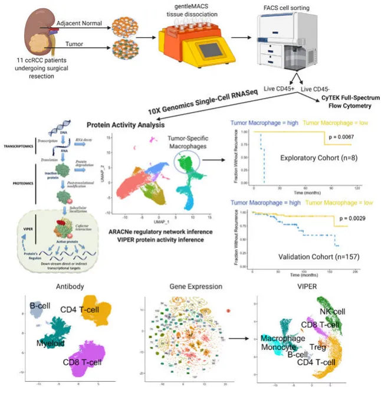
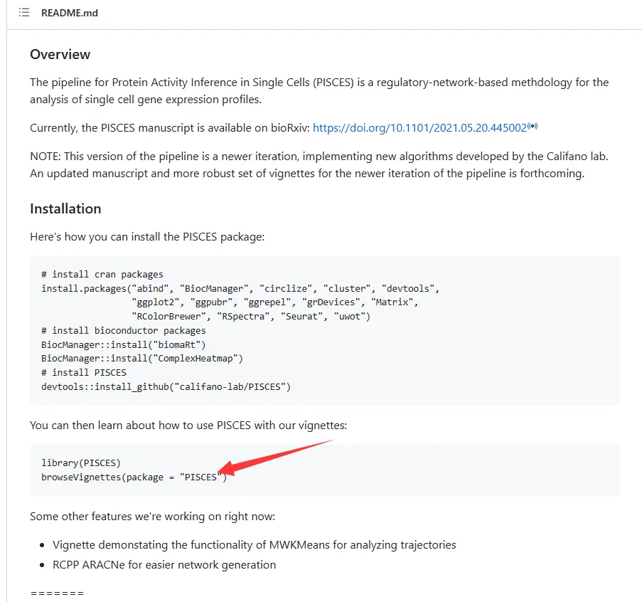
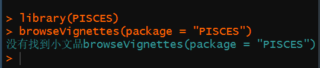
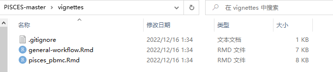
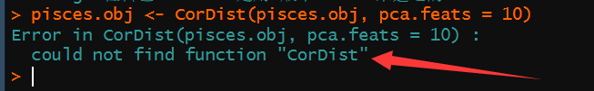
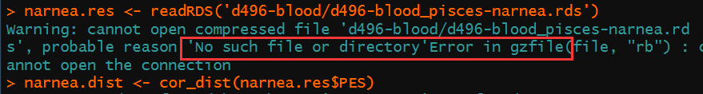
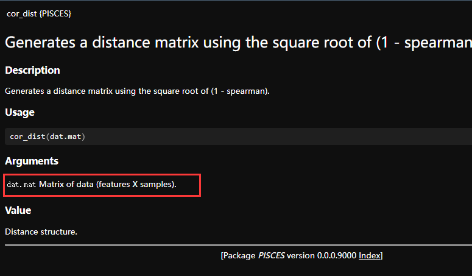

一次糟糕的R包学习体验
原文：https://mp.weixin.qq.com/s?__biz=MzAwMzIzOTk5OQ==&mid=2247503524&idx=1&sn=e7afa36766a3a3504d084d3adad47459&chksm=9b3cb7f4ac4b3ee28c124029e8041e554e1edffd35040969a93a2646fef2de3119dad5c0add4#rd 合集：漫谈胡侃
写在前面
最近看到一个很好的文章，名为"Single-cell protein activity analysis identifies recurrence-associated renal tumor macrophages"，发表在《Cell》主刊上。文章中开发了一种能够通过scRNA-Seq矩阵来推断蛋白质活性 矩阵的R包——PISCES，可以说是变相的完成了“单细胞蛋白质组学 ”的执行。

看了文章之后觉得颇有兴趣，遂展开了该包的学习。谁知除了踩坑 一无所获。PISCES的Github地址为：https://github.com/califano-lab/PISCES，感兴趣的伙伴可以自己试试。踩坑
踩坑1 首先，我按照官方的提示装好了一切依赖的包，但是当我使用browseVignettes(package = "PISCES")调用教程文档时却遇到了报错，我也尝试着在不同平台、不同版本的环境中安装R包，但是均无果。


踩坑2 想着既然无法直接调用vigettes，那我自己去Github把打包文件下下来，从vignettes里的Rmarkdown文件自己编译总行了吧。

结果你猜怎么着，嘿，从Github上pull的包是新版的，rmd却是按照旧版制作的，但旧版的函数CorDist已经不存在了。fine，又给我关上了一扇窗。

而另一个名为pisces_pbmc.Rmd的文档，运行过半时又发现没有"d496-blood_pisces-narnea.rds"这个文件，并且我用我能想到的所有搜索引擎检索了一番，也并没有发现这个文件的下载地址。

看下一行命令的函数帮助文档，这个函数的输入对象是一个表达矩阵，不过这个输入矩阵是raw count呢，还是normalization后的表达量呢，至少在文档里不得而知。我当然还可以像上述这样顺藤摸瓜 一个个的查询每行命令无法运行的解决办法，只是这样有些索然无味。作者自然是没有义务 服务于用户，他也确实没有回答Github中大家在Issues中的问题。所以对于我来说，一个R包的优秀程度不单限于其背后支撑的文章以及强大的功能，还在于它是否便于安装 、是否有能让其他用户方便落地的教程 。所以很遗憾，这个优秀的作品不能为我所用，我更倾向于找一些平替。大家如果有比较好的蛋白质网络预测包也欢迎给我们推荐~


如何联系我们

 公众号后台消息更新不及时，超过48h便不允许回复读者消息，这里给大家留一下领取资料、免费服务器(有root权限的共享服务器,空空的计算节点任意穿梭)的微信号[Biomamba_yunying] ，方便各位随时交流、提建议(科研任务繁重，回复不及时请见谅，备注来意会优先通过)。此外呼声一直很高的交流群 也建好了，欢迎大家入群讨论：永久免费的千人生信、科研交流群
公众号后台消息更新不及时，超过48h便不允许回复读者消息，这里给大家留一下领取资料、免费服务器(有root权限的共享服务器,空空的计算节点任意穿梭)的微信号[Biomamba_yunying] ，方便各位随时交流、提建议(科研任务繁重，回复不及时请见谅，备注来意会优先通过)。此外呼声一直很高的交流群 也建好了，欢迎大家入群讨论：永久免费的千人生信、科研交流群
大家可以阅读完这几篇之后添加给生信入门初学者的小贴士 如何搜索公众号过往发布内容

 您点的每个赞和在看，我都认真当成了喜欢
您点的每个赞和在看，我都认真当成了喜欢